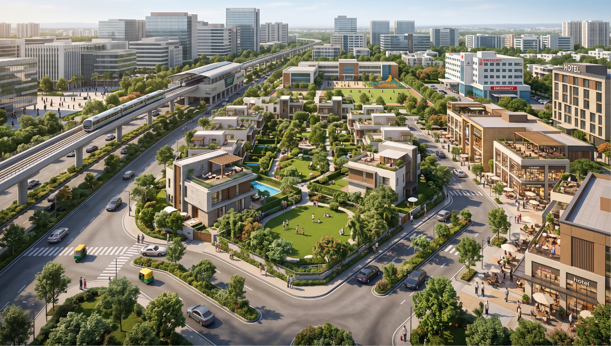
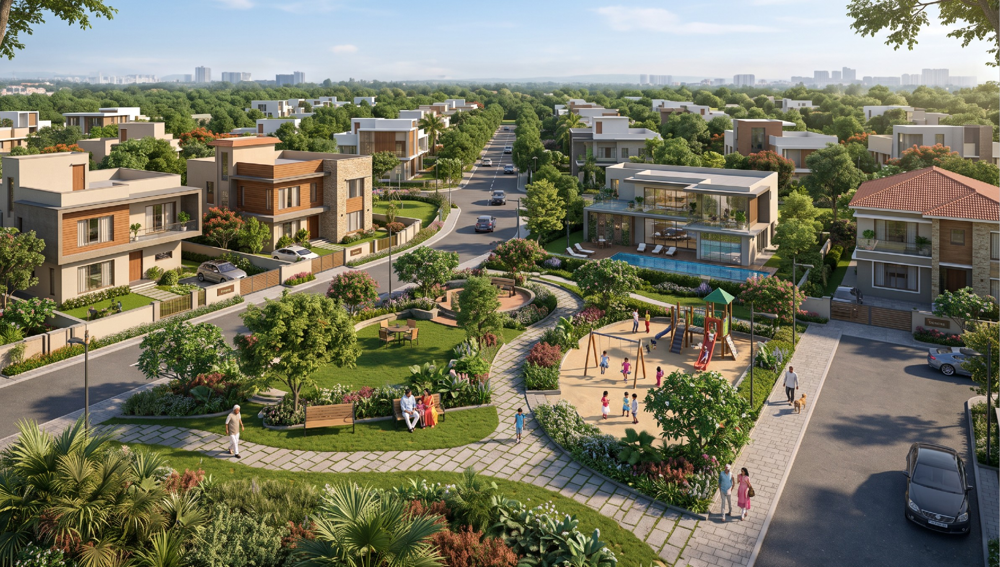

.svg)

Bengaluru's growth has expanded far beyond the traditional city centre. Today, East Bengaluru has emerged as one of the city's most important residential and commercial corridors.
Areas around Whitefield, Hopefarm, Kadugodi, Hoskote and surrounding regions are attracting homebuyers and investors because of their combination of connectivity, employment opportunities, social infrastructure and future growth.
Strong Employment Opportunities
Whitefield has developed into a major technology and business hub, with IT parks, corporate offices and commercial developments creating sustained employment demand. Areas such as ITPL and the wider Whitefield business corridor continue to attract professionals who prefer living closer to their workplaces. Where employment grows, residential demand usually follows.

Improving Connectivity
East Bengaluru benefits from multiple road and public transport networks, including the Namma Metro Purple Line serving Whitefield. Infrastructure such as the Bengaluru–Chennai Expressway and STRR is also strengthening regional connectivity. Better connectivity means easier access to workplaces, schools, hospitals, shopping and other parts of Bengaluru.
A Complete Urban Ecosystem
Whitefield has evolved from an IT destination into a complete residential ecosystem. The region offers access to schools and colleges, hospitals, shopping and entertainment, restaurants and hotels, offices and business parks, and residential communities. For families, this means greater convenience in everyday life.
Growing Preference for Spacious Homes
Today's homebuyers are increasingly looking for more than a compact apartment. Many families want larger living spaces, private gardens, home offices, outdoor areas, flexible floor plans, and spaces for children and seniors. This is creating growing interest in villa plots and plotted communities.
Why Plotted Communities?
A well-planned plotted development combines individual ownership with community living. Buyers can eventually create a customised home while enjoying shared amenities such as landscaped parks, children's play areas, clubhouse facilities, security and recreational spaces. It offers the freedom of your own home and the advantages of a community.

Why Lap of Nature?
Lap of Nature brings together residential plots, green spaces, lifestyle amenities and community facilities in East Bengaluru. With landscaped parks, children's spaces, wellness areas, Work From Home and Work From Nature spaces, the community is designed around modern family life. Live connected to the city. Live closer to nature.
What Should Buyers Look For?
Before investing in East Bengaluru, evaluate:
- Location and connectivity
- Developer credibility
- Legal approvals
- Social infrastructure
- Master planning
- Existing and upcoming infrastructure
- Long-term growth potential
The Future of East Bengaluru
As Bengaluru continues expanding, well-connected growth corridors will remain important to the city's residential development. For families looking for space and investors seeking long-term opportunities, East Bengaluru is a region worth considering.
Discover Lap of Nature
Explore a nature-inspired plotted community where you can build your dream home while staying connected to Bengaluru.